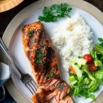

Grilled Salmon

Description
Theres no healthier, easier, or faster summer entree than a perfect piece of grilled salmon. This 15-minute recipe is a staple in our regular dinner routine, and I'm so excited to share my tips with you today!
Ingredients
For the Salmon
- 1-1 1/2 lbs salmon fillet, cut into 4 pieces
- Olive oil
For the House Seasoning
- 1/4 cup garlic powder
- 1/4 cup kosher salt
- 1/4 cup dried parsley
- 1/4 cup dried minced onion
- 1/4 cup dried basil
Steps
Prepare the House Seasoning:
Mix ingredients together and store in an airtight container for up to 6 months.Prepare the Salmon:
Rub each piece of salmon with olive oil and sprinkle with house seasoning, to taste (I use about 1 teaspoon of olive oil and 1/4 teaspoon of seasoning per piece).Grill the Salmon:
Heat coals, gas grill, or grill pan to medium heat. Place salmon on the grill. Cover and grill over medium heat for about 5 minutes per side (maybe a few more minutes, depending on the thickness of your fish). The salmon is done when it flakes easily with a fork.